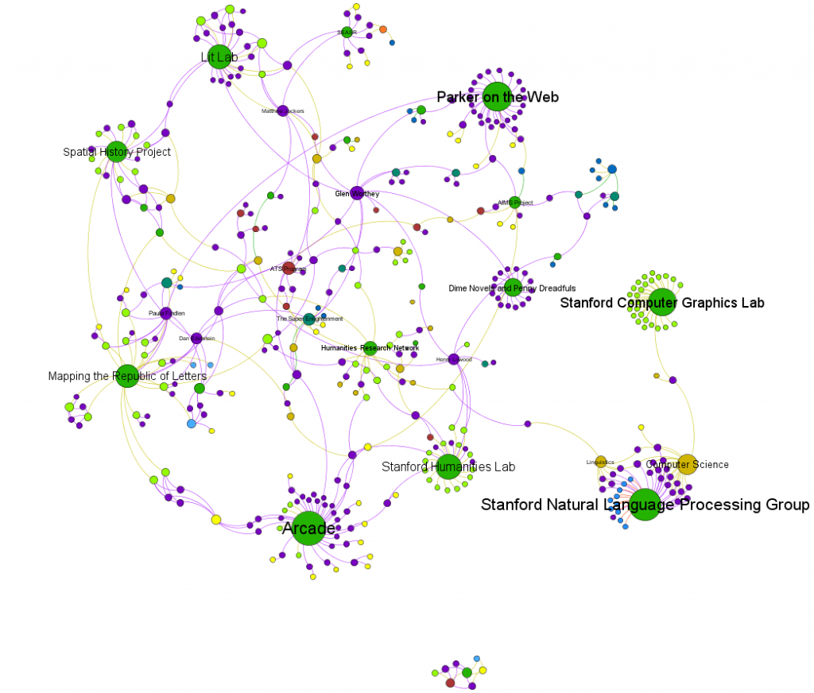
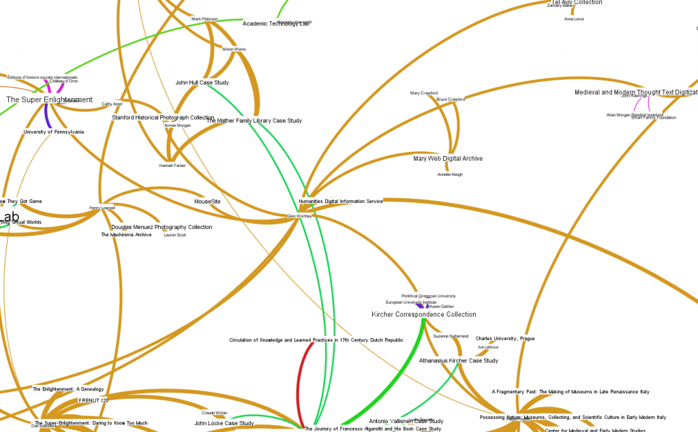
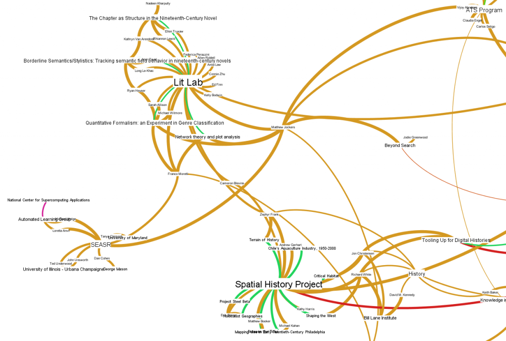

I’ve started receiving more and more help with describing the Digital Humanities landscape here at Stanford, and so I suppose it’s time to update the DH@Stanford Map.


The Digital Humanities community at Stanford, visualized in Gephi
Glen Worthey, the digital humanities librarian in Green Library, was particularly helpful in identifying ongoing and completed archives and collections (which naturally required the creation of an archive/collection category) that utilized digital means. Glen, along with Matt Jockers, are the official hosts of DH2011, being held here at Stanford in June.


Glen Worthey's neighborhood on the graph
Among other additions are Matt Jockers’ and Franco Moretti’s collaboration with Dan Cohen, Ted Underwood and John Unsworth on the SEASR project.


SEASR Project neighborhood on the DH@Stanford graph.
If you look closely, you’ll notice that the connections now vary in thickness, indicating weight values to begin dealing with the thorny issue of measuring contribution. For now, it’s all very unsophisticated, with affiliation (2) scoring lower than involvement (4) and certain keywords (creator_of, author_of) scoring a 5. The ultimate goal is to present an interface wherein the graph navigator is presented with all distinct edge categories, node types and analytical options so that the individual can experiment with a variety of examples and explore the results.